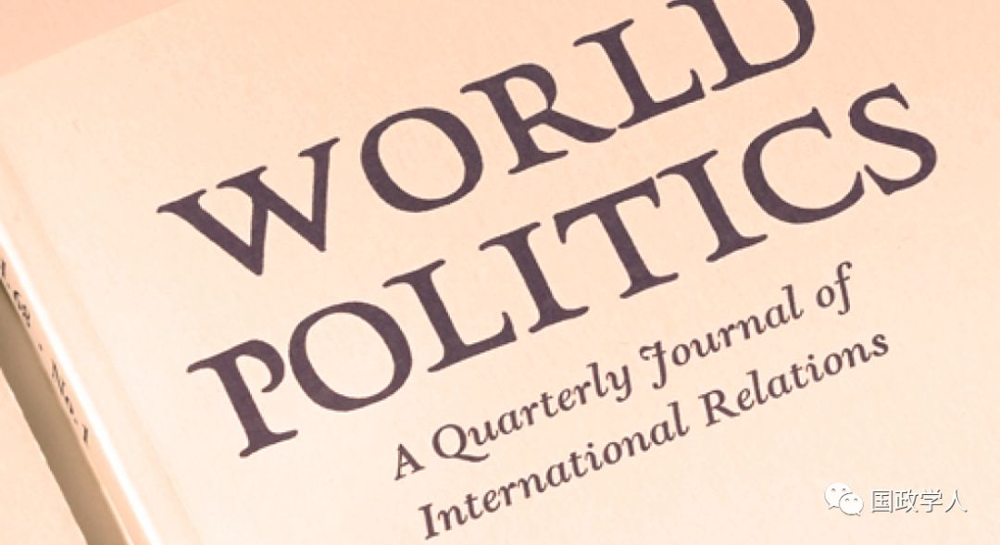

收录于合集

简 介
【作者】 Alexandru Grigorescu 芝加哥洛约拉大学政治科学系教授，全球和国际研究项目副主任。 Çağlayan Başer 伊利诺伊大学厄巴纳-香槟分校访问学者，芝加哥洛约拉大学博士。
** 【编译】** 黄运涛
** ** ** 【校对】****** 兰星辰 朱文菡
** ** ** ** ** 【审核】********** 丁伟航
** **【 来源 】****Published online: 24 December 2018. ( World Politics , Volume 71, Issue 1, January 2019 , pp. 88-125.)
** 【 ** ** 期刊** 】****World Politics，创刊于1948年，是国际知名的政治科学季刊。主要刊发理论性和实证性文章，以及国际关系和比较政治问题的评论性文章。

政府间合作与非政府间合作之间的选择：将国内偏好投射到全球治理中
The Choice between Intergovernmentalism and Nongovernmentalism: Projecting Domestic Preferences to Global Governance
内容提要
本文试图揭示政府在什么情况下倾向于通过政府间合作来解决全球问题，作者认为，决定这点的一个重要因素在于国内 “大政府”和“小政府”两种思潮的角力。
文章导读
政府间合作指的是各国政府联手解决某些问题，而非政府间合作范围更广，可由非政府组织合作解决的问题和可采取的手段也更多。非政府间合作可根据参与者的不同而采取不同的行动，实际上，红十字会和洛克菲勒基金会等非政府组织在卫生领域发挥了重要的作用，其角色也与政府有相似之处。而当政府积极参与国际事务时，这些非政府组织会被边缘化，但当政府不愿意介入时，非政府组织就会在全球治理中发挥重要作用。
非政府组织所能发挥的作用跟政府介入程度密切相关，有时候政府不愿意参与，为非政府组织留下空间，但有的时候政府则完全不允许非政府组织参与；而更多的时候是介于这两种极端情况之间，政府会寻求两种方式的结合。另外，这也不单单取决于政府是否允许和鼓励，非政府组织的行为体是否接受这样的安排也十分重要。由于全面的研究非常复杂，故本文把研究范围局限在政府一方的行为。简而言之，当政府更积极参与时，主动权会掌握在政府手里，反之亦然。
一战后的1919年，各战胜国在法国建立国际非政府组织——红十字会来取代政府间组织负责和平时期的世界医疗事务。随后，欧洲爆发西班牙流感，新成立的国联并没把卫生组织列入到它的官方体系里，而要求红十字会领导抗疫工作，但随后这一角色被政府建立的卫生部门所取代，其职权范围甚至有所扩大。1930年代初，全球爆发经济危机，各国对国联卫生组织的在人力物力财力上投入大幅缩水，要不是洛克菲勒财团出手援助，它甚至很可能在这次危机中倒闭了。
二战后，政府间组织的世界卫生组织成为全球卫生事业的领导者，但作用却越来越小。相反，盖茨基金会等非政府组织的角色却越来越重要，全球卫生领域的一半资金都是来源于这样的非政府组织；而其他领域的情况也大同小异。本文尝试这解释这种变化，研究政府能否在这些问题上采取更积极的措施，而不要什么都推给非政府组织。
**1
**
在这个问题上存在着两种机制：一种是基于意识形态，另一种则基于利益
80年代冷战结束苏联解体以来，政府积极干预主义降温，很多领域交给了非政府组织。以在全球治理上发挥过重要作用的美国为例，通过对一系列问题的研究，作者发现，事实是美国政府也曾扮演过很重要的角色，如威尔逊时代，而在二战后，政府的干预程度随着执政党的更替而不断反复。
作者认为，国内政府行动和政府间主义之间有两个联系点
第一个是基于跨越国内和国际差异的意识形态所产生的联系。
第二个是国内机构对各国利益和通过政府间解决办法的能力的影响。
当意识形态要求国内政府采取行动时，高层官员也倾向于在全球治理中促进政府间主义。 罗斯福1941年发表的“四大自由”演讲，被认为是美国参与二战及以后全球事务的第一步，它提供了一个行动主义从美国国内政策蔓延到外交政策的例子。相反，当政府的观念是“小政府”时，它就不太可能支持政府间的官僚机构，比如说撒切尔政府就曾反对过建立强大的欧洲机构。
有几个原因可以解释为什么意识形态可能让精英阶层主张将政府在国际上和国内采取不同的措施。 例如，这些人可能只是在他们自己的个人信仰中寻求一致性，以避免认知失调。对于一些政治领导人来说，他们很难接受即他们自己的政府愿意承担国内问题，但不会考虑其他国家面临类似问题的个人的命运的情况。另一种可能性是，即使是那些个人认为没有必要保持一致性的精英人士，也可能在国内和国际层面推行类似的政策，哪怕只是为了避免国内(甚至国际)听众质疑他们的诚意的风险。例如，一个高级政府官员很难在国内推动非政府组织发挥更大的作用，但在全球层面上却反对它。
**2
**
关于国内与国际的关系的第二个解释是制度性的
具体地说，作者建议 各国在建立了处理类似国内问题的机构或赋予现有机构权力之后，把这种机构的经验推广到国际机构。 例如，导致国际劳工组织成立的最重要因素之一是美英法等强国在20世纪10年代成立了劳工部，不久后的的1918年，这些国家便开始讨论设立劳工组织的问题。
各个国家在这个问题上的倾向也有所不同，比如说，总体上看，英国较为倾向通过于政府间合作的手段来解决，而美国则相反，这一差异在两国设立卫生部的时间差了几十年就能看出来，冷战时期美苏两国的差异就更大了。
为了解释这一问题， ** 作者做了两个假设：首先是假设全球只有唯一一个超级大国，它在全球治理方面发挥着最重要的作用；但与此同时也测试了两三个大国是否对全球治理产生影响；** 实际上，国际间政府组织往往是由最强大的一两个国家倡议成立的，很少超过三个，比如说当年美国倡议成立国际联盟。 ** 其次，作者假设，当大国决定全球治理结构时，其最终结果是它们的偏好之间的妥协，大国政府的参与程度决定着最终的结果** ** 。** 该系统中最强大国家的国内政府行动程度越高，就越有可能建立政府间组织；另一方面，政府在国内作用越大，该国就越有可能加入政府间组织。 现有研究也有涉及非政府行动者在塑造全球治理方面的潜在作用。早期的研究认为，决心在全球治理中发挥更大作用的政府行为体将直接介入并取代非政府行为体。而最新研究发现，当政府行为体有强大的动机来控制全球治理时(特别是在如安全等关键领域)，他们却要单独行事。而非政府行为者往往有自己的特定利益，并可以采取与国家利益相悖的行动。
非政府行为者与所有组织一样，是理性行为体，寻求利益最大化。 当政府不采取行动时，新的非政府实体就会出现，现有的非政府实体则会进一步发展壮大，填补它们的优势。即使政府没有退出，非政府组织也有兴趣参与全球治理，他们还经常寻求与目标相似的政府间组织合作来获得各种好处。
非政府组织参与全球治理并不仅仅为了本组织的利益。政府行为者允许或鼓励他们这样做也不完全是基于意识形态或国内体制因素，也可能源于这两种角色之间的功能差异，这使得它们在不同情况下分别具有各自的优势或劣势。 就是说，在特定的环境中，某些参与者可能比其他参与者更有效。事实上，非政府组织的灵活性、企业特性和较低的进入成本使他们比政府间组织更快地参与全球问题领域。非政府组织一旦成为这样的角色，就可能通过各种手段来巩固这一地位。
非政府行为者也有缺点，并不适合参与所有的国际议题，比如说安全和领土问题等 ，并不是政府对他们进行限制，而是他们并没有强而有力的措施应对，所以并不适合。为此在研究这个问题时，必须考虑这些差异。
接下来讨论 教育问题 ，第二次世界大战之前，教育和主权之间紧密相连，使得各国都认为在这个问题政府间组织无能为力。 在过去一个半世纪里，全球教育的政府间性质发生了重大变化，例如非政府组织优先于甚至取代了政府组织 。
从全球治理的视角来看，作者要确定各大国的政府或非政府国内机构处理教育问题的力度，也要研究 这些国家的官员是否支持政府间或非政府方式来管理全球教育。 作者发现， 政府在国内教育中发挥积极作用的国家更有可能支持建立与教育有关的政府间组织，并成为这些组织的成员。 此外，这个案例研究让作者能够区分基于意识形态机制的变化和基于制度的变化。作者预期，国内教育机构的官员只专注于在教育领域建立和加入政府间组织，高级官员将他们关于教育领域的论点与更广泛的发展联系起来(以意识形态为基础的机制)，国内专门机构的官员将在其本身机构成立后的头几年内最积极地促进国际组织的建立；支持一种或另一种全球治理形式的规范性论据，更有可能由最高层精英提出，而不是由国内专业机构的官员提出。
从1899年在瑞士日内瓦成立的新学校国际局开始， 教育领域第一次成功的国际合作 ，实质上是非政府的。虽然在二十世纪初出现了几十个教育国际组织，但是所有早期建立以教育为重点的政府间组织的尝试，例如常设国际教育理事会(1885年)，都没有成功。在第一次世界大战以前，缺乏政府并不支持建立这样的政府间组织，这是主要因为大多数国家没有全国性的公共教育机构参与这些倡议，但也有例外。18世纪末，普鲁士成为第一个部分集中管理教育的大国。法国紧随其后，于1828年成立了公共教育部。
而英国的教育体系主要是私立的，二战前，英国政府在教育中的作用很弱，到了1944年《教育法》才建立教育部。在美国，各种小型的联邦教育机构于1867年成立，但教育系统是高度分散的，美国教育部直到1979年才成为内阁级别的部门。美国联邦教育机构的弱势令了该国没法很好地参与建立教育政府间组织的国际谈判。
**1919 年的巴黎和会要求国际联盟解决教育问题，并建立一个政府间的国际教育局，但这一提议并没得到四大战胜国的重视。**为此， 各成员国将合作倡议转向非政府组织。 1921年，几个小国提议国联成立一个政府间组织来处理“知识合作”(包括教育合作)。但受到英国代表以自由主义和个人主义为由反对，最终，这一计划以失败告终。此后几年，这一问题不断有人提起，但进展不大，最终成立了两个组织作为折衷方案，第一个是国际知识合作研究所(IIIc)，第二个国际合作倡议是非政府的国际教育局，但作用一直有限。二战期间和战后，这一问题在英国和美国都取得了一定进展。
美国于1944年第一次参与教育方面政府间组织的工作，当时美国派出教育政策方面有经验的人士组成的代表团，提交了一份提案，提议建立一个“全新的组织”，该组织被设想为真正政府间组织，其职能将扩展到已由非政府组织负责的科教文领域。
而法国则以存在了20多年的工会组织的模式为联合国教科文组织提供参考。然而，各国在该组织人员构成方面又出现了意见分歧，对小国而言，他们更倾向于委员以个人身份投票，这样将得以削弱大国对该组织的控制。
到了20世纪50年代，受麦卡锡主义的影响，联合国教科文组织逐渐衰落，与此同时，苏联也把它的霸道作风带进该组织，引起美国强烈不满，并于1984年退出，在此期间，美国仍通过世界银行及联合国儿童基金会等机构继续参与这一领域。近年来，该组织越来越向非政府组织方向发展，比如说民间基金会对其支持的份额日益增加。
**3
** 案例研究
作者预计， 政府在国内教育方面发挥更积极作用的国家更有可能支持建立政府间组织并加入。 事实上，在20世纪初，法国政府对教育积极参与，除法国外，德国和意大利等政府积极参与教育事业的都成为了政府间组织Ibe的成员;而政府当时不介入教育英国和美国则没有加入。
第二次世界大战后，当英国和美国转向政府更多地参与国内教育时，他们也支持在教育领域建立政府间组织。到上世纪80年代，美国和英国已不再积极参与国内治理。他们还批评了联合国教科文组织的中央集权主义做法，最终退出了该组织。那些政府在教育方面发挥重要作用的国家仍然是该组织成员。
总之，案例研究表明， 在内政问题上积极干预政策盛行的国家倾向于政府间主义的；而相反的国家则向非政府 间 主义。当然，也不能排除其他原因导致这一结果，如国际政治斗争等。
**4
** ** ** 结 论 ****
综合分析了案例研究和统计分析的结果，作者得出结论， 国内多采取积极政策的政府，更有可能促进政府间合作。这一发现补充了讨论各国在在选择多边主义还是单边主义的现有研究。 总的来说，两种情况下各国政府更倾向于采取政府间合作，一是认为它们应该介入来处理这些问题，二是它们可以相互合作时。这样的研究对全球治理也有重大的意义，值得注意的是，随着中国的崛起，政府间合作将会受到更强力的推动。
本文是从政治学的角度，而不是从产生世界政治理论的社会学角度来研究这个问题。因此，在考虑非政府组织的作用的同时，要 更加重视强国及其改变全球治理的能力 ，这种双管齐下的方法可能为解释全球治理中的非政府和政府间趋势的未来研究提供更合理的解释。也能引发一些思考： 即使强国没有给它们留下多少行动空间，非政府行为者能否改变全球治理的性质 ？ 如果各国政府允许或鼓励非政府组织在全球治理中发挥作用，非政府组织将在何种条件下在全球治理中发挥更大的作用?这些问题都是挺有研究价值的研究。
_ ** _ 本文由国政学人微信平台独家编译首发**
更多阅读
【重磅速递】约瑟夫·奈：美国霸权的兴衰：从威尔逊到特朗普 | 国政学人
【重磅推荐】巴里·布赞：英国学派视角下的中国崛起 | 国政学人
【重磅速递】米尔斯海默：注定失败：自由主义国际秩序的兴衰 | 国政学人
【国际组织】IO杂志：联合国维和行动的武力运用问题研究 | 国政学人
【国际秩序】为什么自由主义国际秩序理念将美国外交政策引入歧途？| 国政学人
【关系理论】“关系”：世界政治关系理论的中国话语 | 国政学人
【百年国关】历史在国际社会中的应用：从巴黎和会到现在 | 国政学人
【英国学派】张勇进：中国与全球国际社会中的自由主义等级制：实力与对规范变迁的协商 | 国政学人
【地区秩序】论经济实力的可转化性：中国经济崛起与东亚安全秩序 | 国政学人
【中俄关系】不得已的伙伴：系统-单元动态与中俄关系 | 国政学人
【IPE研究】美国对外贸易政策的“1934年体制”是如何形成的？ | 国政学人
【现实主义】斯蒂芬·沃尔特：傲慢的终结与美国克制的新时代 | 国政学人
【理论批判】系统、层次与结构理论：沃尔兹的理论并非系统理论 | 国政学人
【外交政策】单极体系下的不和平状态与美国外交政策 | 国政学人
【欧洲研究】资本主义多样性与合规：加入欧盟后中东欧的经济改革 | 国政学人